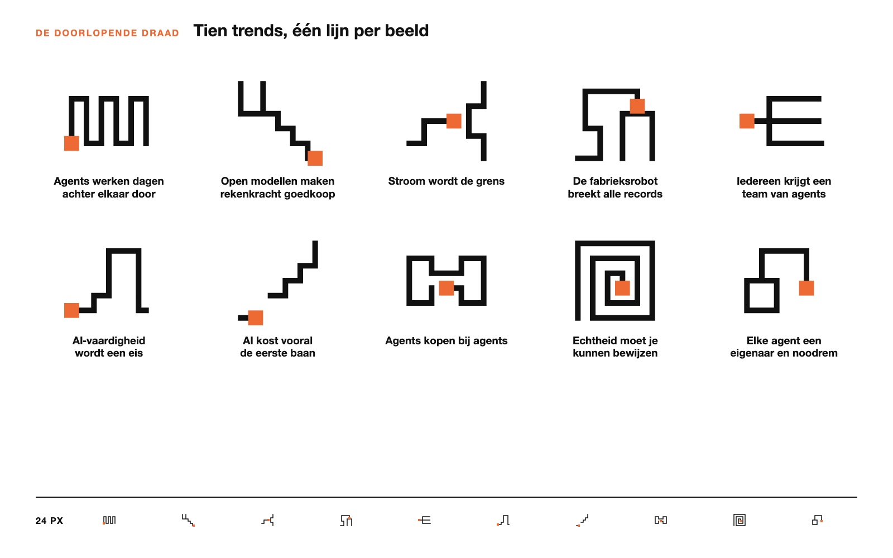
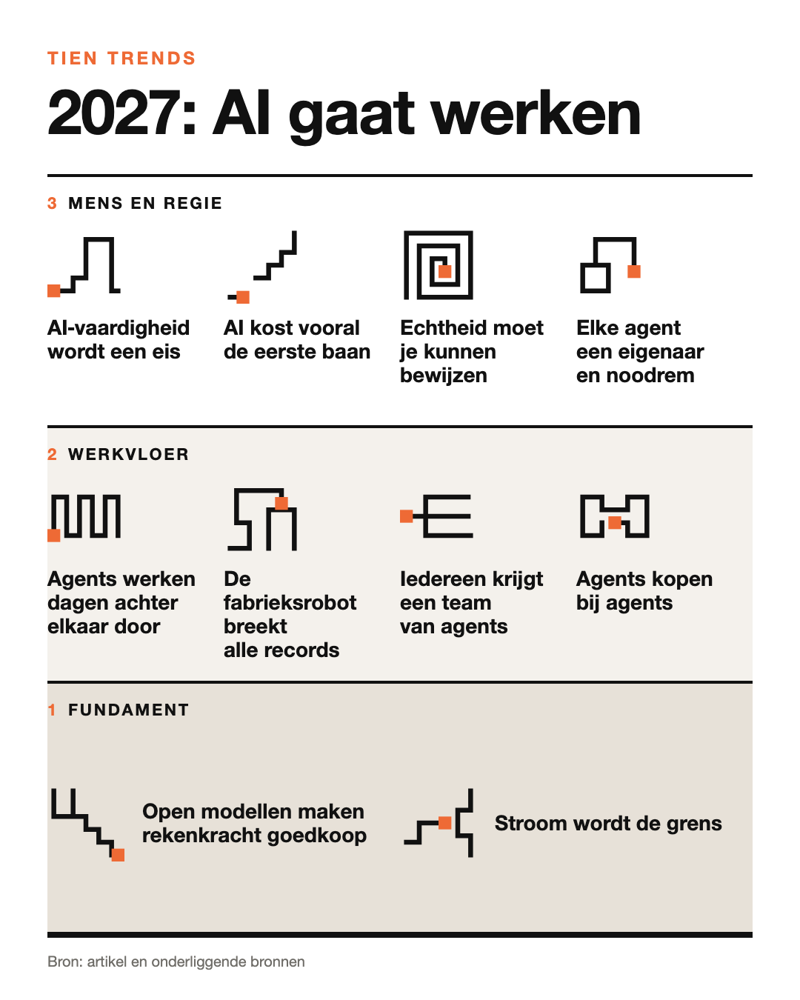
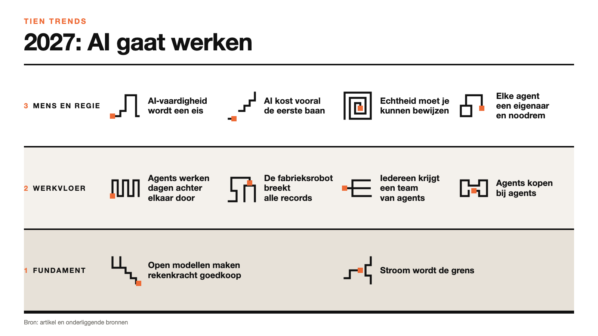
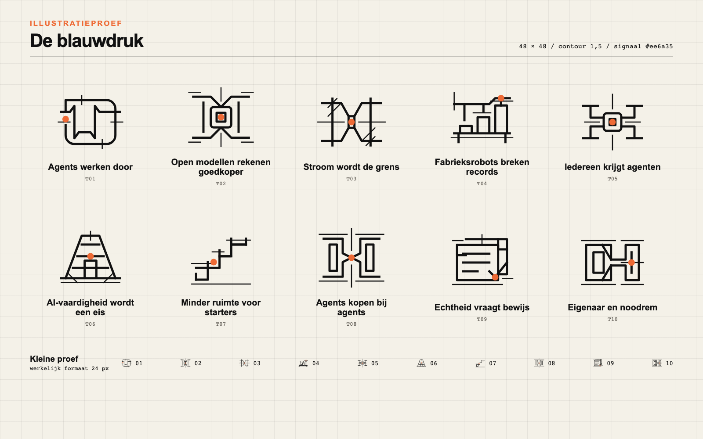
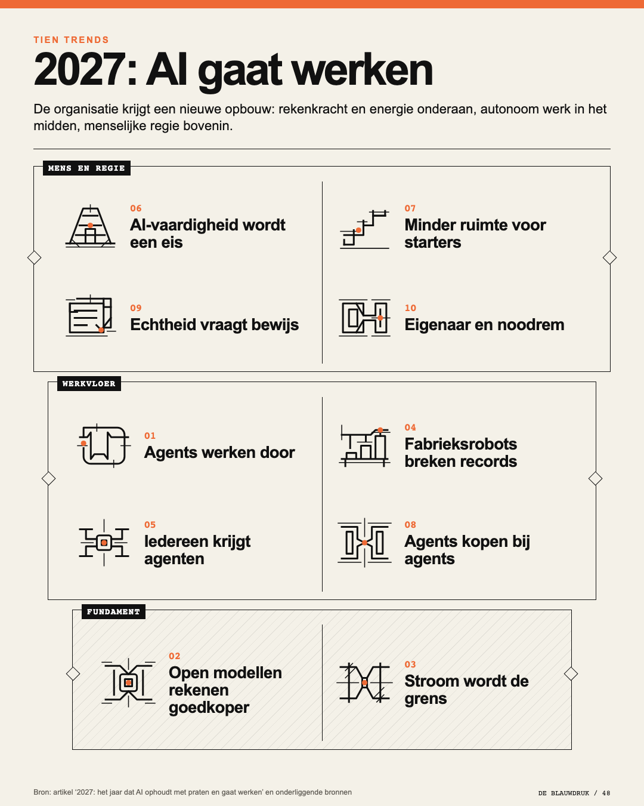
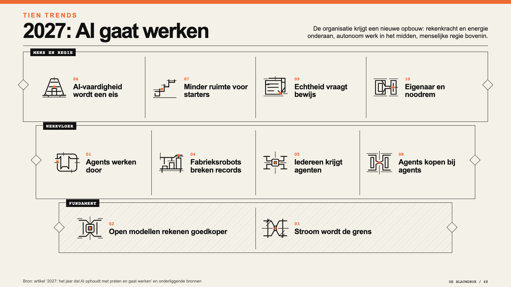
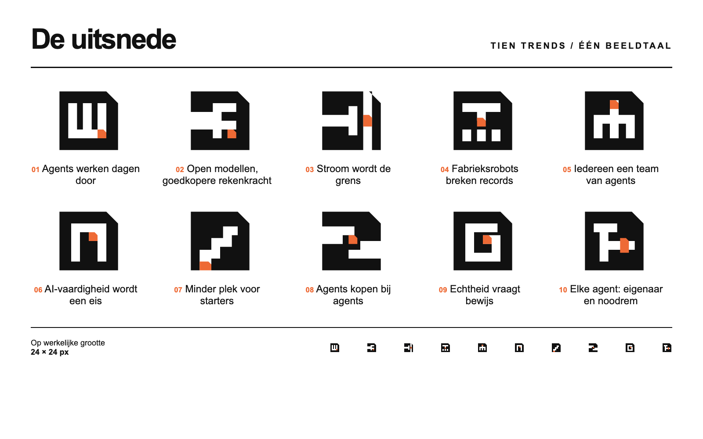
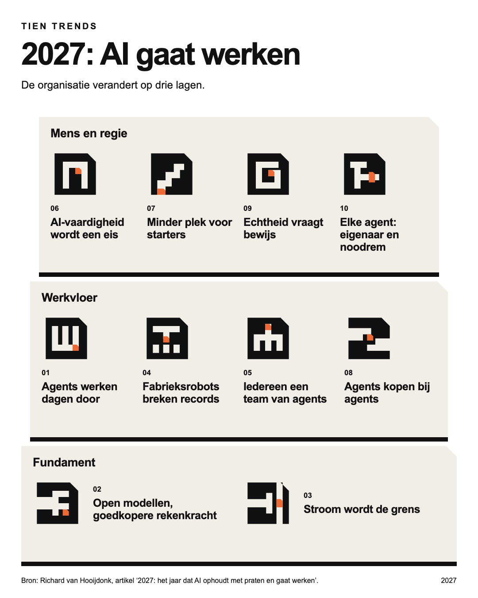
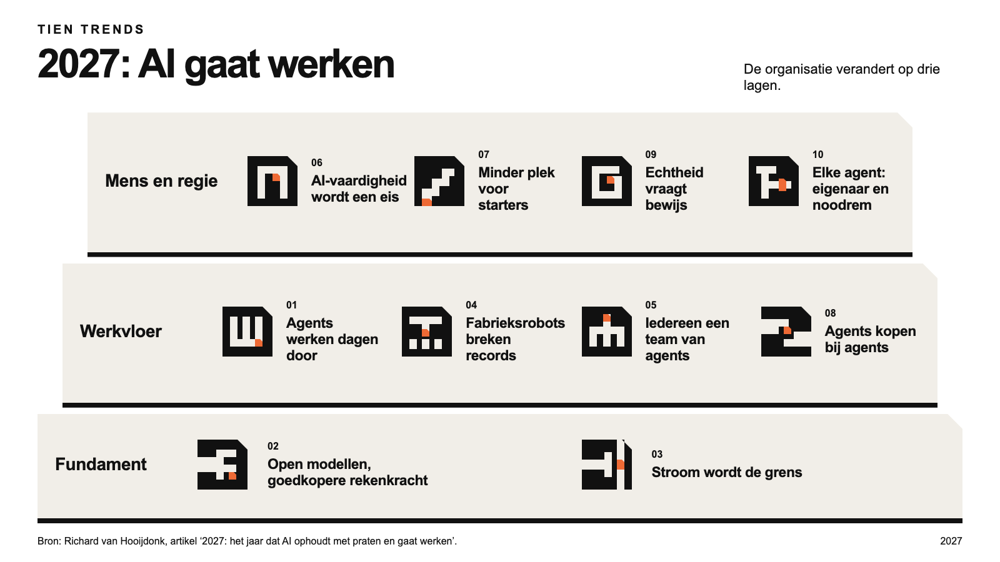

Drie illustratiesets voor de tien trends
Per set: tien eigen getekende illustraties (SVG, alleen zwart en jouw oranje), een toets op 24 pixels, en de infographic met alle tien trends als gelaagde organisatie: fundament, werkvloer, mens en regie. Eén set kiezen; die wordt de vaste beeldtaal voor infographic, social, dia's, nieuwsbrief en video.
A. De doorlopende draad
Elk beeld is één lijn met rechte hoeken; het oranje blokje is waar het werk begint of stopt.



B. De blauwdruk
Dunne technische lijn met constructielijnen, zoals een ingenieurstekening; één oranje signaalpunt.



C. De uitsnede
Massieve zwarte vlakken waaruit de betekenis wit is gesneden, met één afgesneden hoek en een oranje accent.



Leestoets (Astra, zonder titels)
Astra keek alleen naar de vorm en raadde per beeld welke trend het is. Niet volledig blind: hij zag kort de titels in de code.
| Set | Goed geraden | Verward |
|---|---|---|
| C. De uitsnede | 7/10 | 02 lijkt op team, 08 op knelpunt, 09 op rekenkracht |
| B. De blauwdruk | 7/10 | 01 lijkt op bewijsstuk, 03 op netwerk, 05 op rekeneenheid |
| A. De draad | 6/10 | 02 en 06 lijken op 07, 09 op rekenkracht, 10 op stroomgrens |
Keuze
- Welke set: A, B of C (of een mix, bijvoorbeeld de draad met de leesbaarheid van de blauwdruk)?
- Welke illustraties wil je anders? Noem het nummer en wat je erin wilt zien.
- De infographic: is de gelaagde organisatie de goede vorm, of liever een andere?